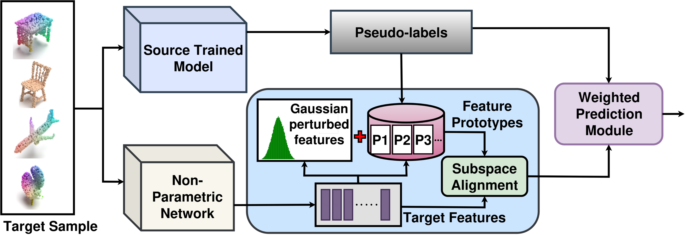
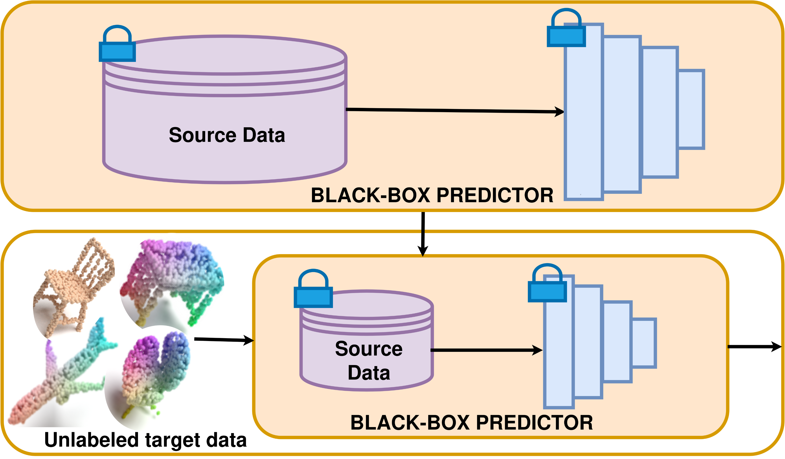
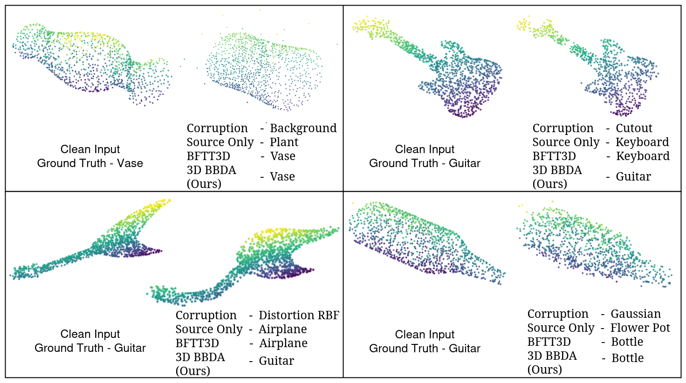
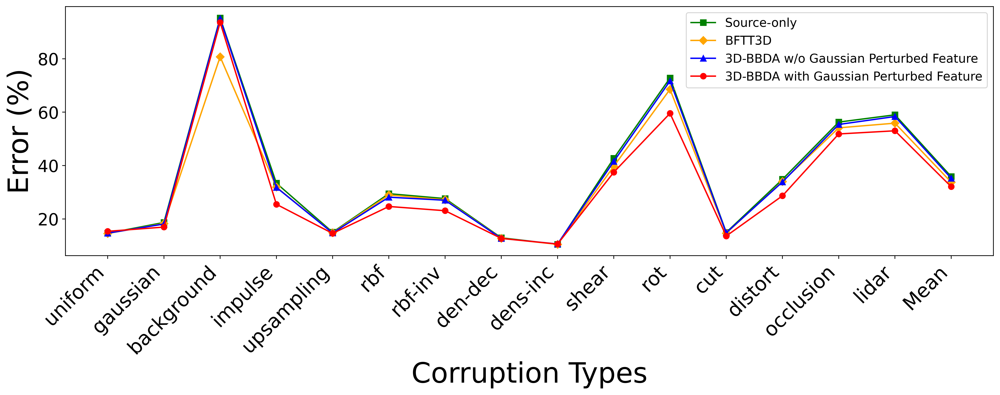

01⌁
Black-box
prediction
Use logits exposed by the frozen source predictor. Adaptation never accesses source examples or internal parameters.
SOURCE-FREE
Department of Data Science and Engineering,
Indian Institute of Science Education and Research Bhopal, India
{shivangir23, kunal24, vaibhav, vinodkk}@iiserb.ac.in
*Equal contribution.

Robust 3D point-cloud recognition is critical for robotics, mapping, and urban sensing, yet classifiers often suffer performance drops under sensor changes, environmental variation, and acquisition artifacts.
We present 3D-BBDA, a backpropagation-free black-box domain adaptation framework that adapts a source-trained predictor to unlabeled target data using only black-box outputs. Our method performs pseudo-label-guided prototype-based alignment and employs a weighted prediction module to fuse source logits with alignment logits, reducing sensitivity to noisy pseudo-labels.
No source data. No model parameters. No gradient updates.

The deployment constraint. Source data and the predictor are locked; only unlabeled target data is available at adaptation time.
Three ideas turn a restricted deployment setting into a practical adaptation loop.
Use logits exposed by the frozen source predictor. Adaptation never accesses source examples or internal parameters.
Build class prototypes from target predictions and align target representations to stabilize the domain shift.
Gaussian perturbations create a fallback memory for missing or unreliable class prototypes during alignment.
Evaluated on corrupted 3D benchmarks to test whether a model can stay useful when its original world changes.


@inproceedings{3dbbda2027,
title = {3D-BBDA: Backpropagation-Free Black-Box Domain Adaptation for Robust 3D Point Cloud Recognition},
author = {Rai, Shivangi and Jangid, Kunal and Kumar, Vaibhav and Kurmi, Vinod K.},
booktitle = {WACV}, year = {2027}
}For questions, research discussions, or collaboration inquiries, please reach out to:
kunal24@iiserb.ac.inshivangir23@iiserb.ac.injangidkunal1999@gmail.com